練好發音臂力，帶上拆音視力，
背單字不再費力！
素材：蕭博士臉書貼文〈投籃與拼音〉的導讀。投進一顆球要看得到籃框、也要推得到那個距離；拼出一個字要拆得開聲音、也要發得出聲音。完成八個節次，上方計分板會幫你記分，燈號亮起代表該節完成。
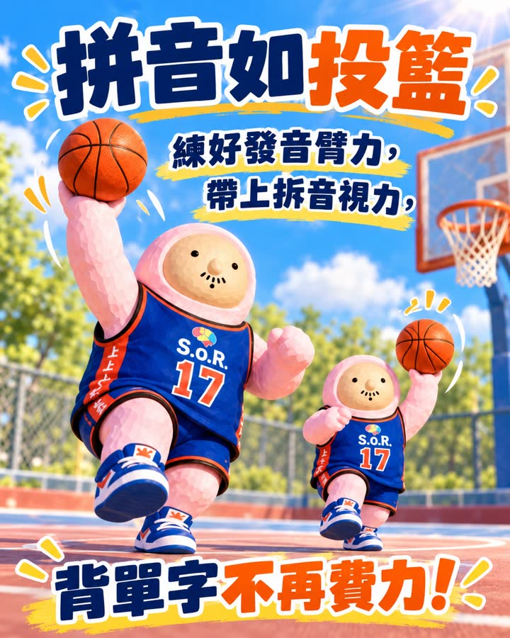
先聽一遍，再往下做八個節次；也可以邊聽邊做。
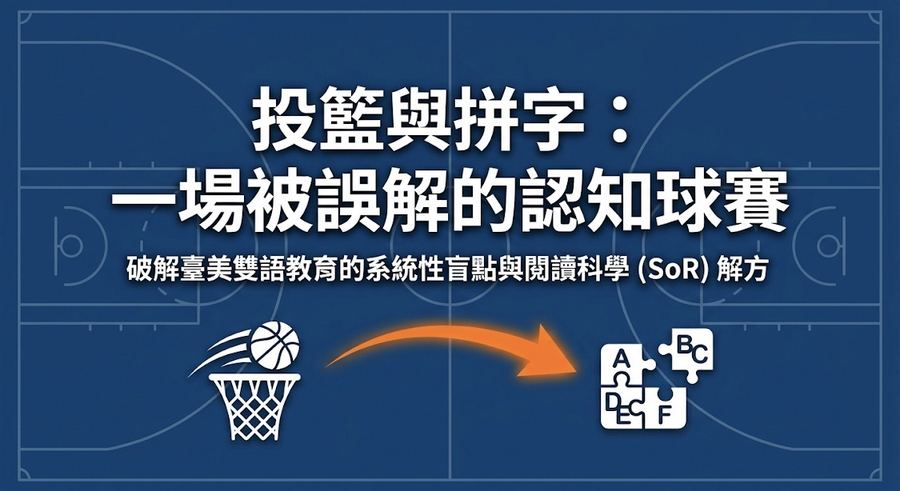
先憑直覺選，不用想太久。三個選項都可以點，各有一段解析。
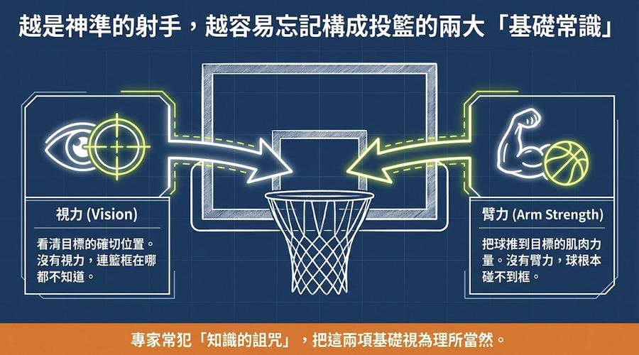
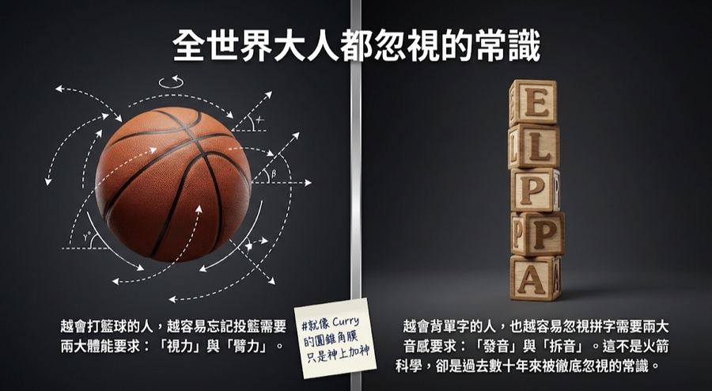
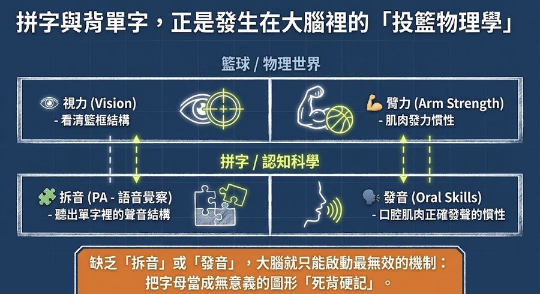
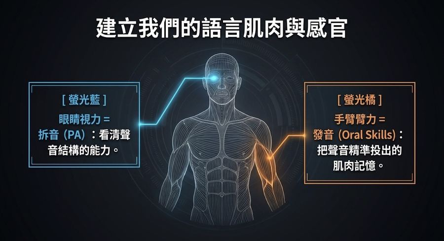
投籃紀錄（✓ 是已經投過的組合，橘框是現在的開關）：
四種組合都投過，這一節才算完成。
NBA 射手史蒂芬·柯瑞患有圓錐角膜，看到的籃框是模糊的。他靠極精確的肌肉記憶與本體感覺補上視力。一般人死背單字，就像沒有柯瑞的手感、也看不清籃框，卻想靠每天狂投一千顆球變成神射手。
四張都翻過，這一節完成。
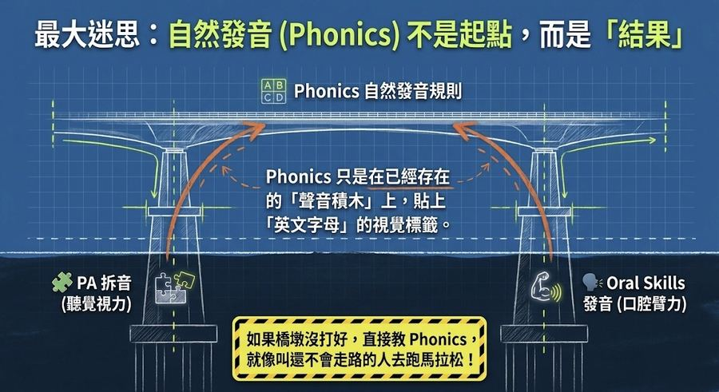
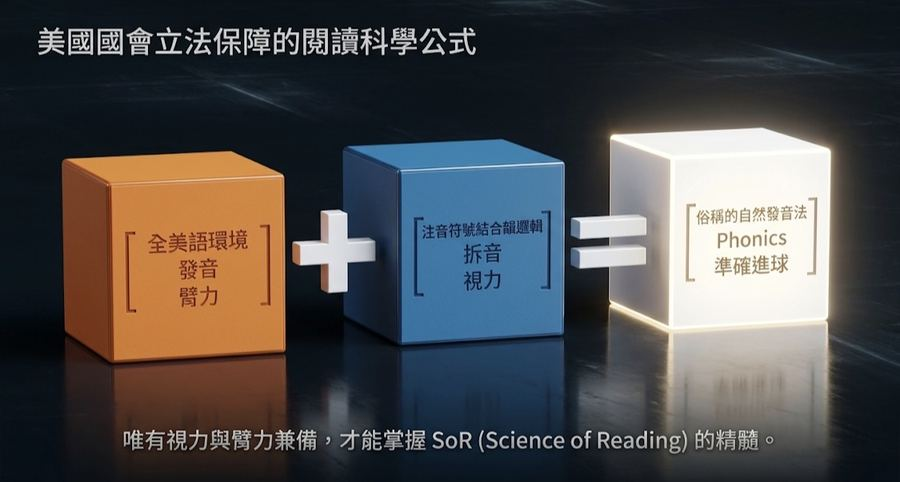
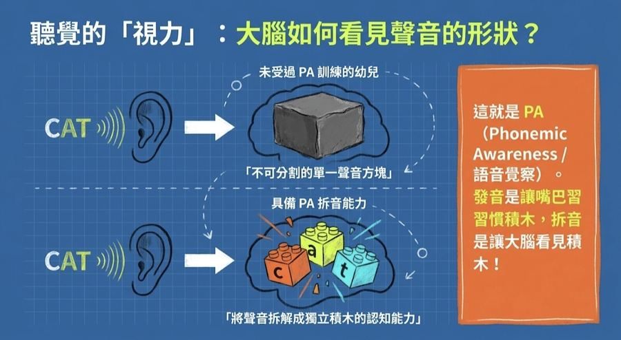
數的是聲音，不是字母。可以先按喇叭聽一次。
先看影片，聽主播怎麼喊。再點下面三個字，各聽一次。
若說得出藍色球隊的四分衛，
就能跟老美的男生，conversation 好一會兒。
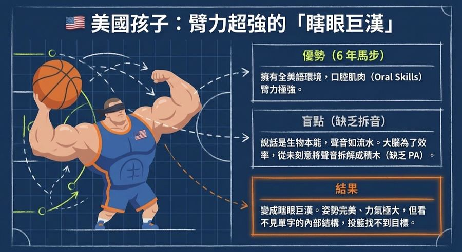
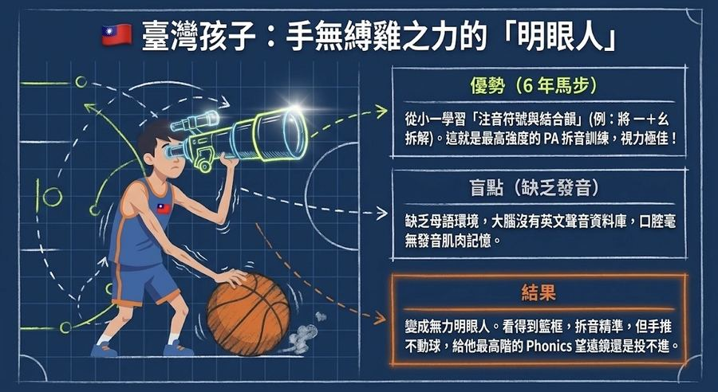
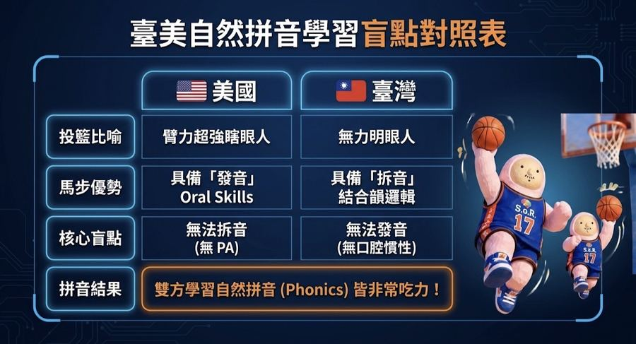
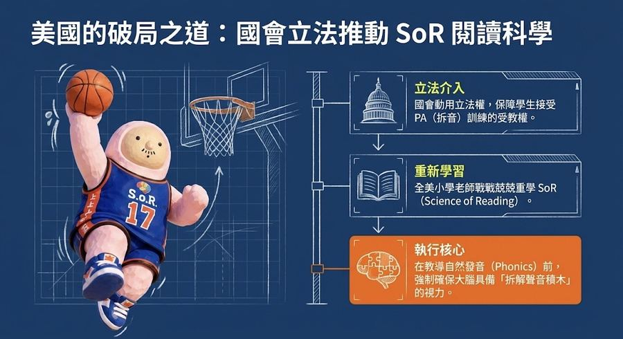
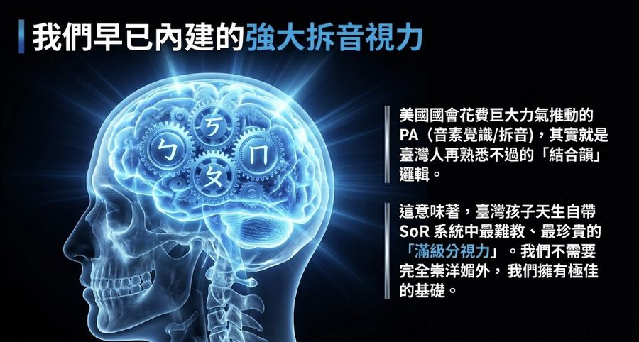
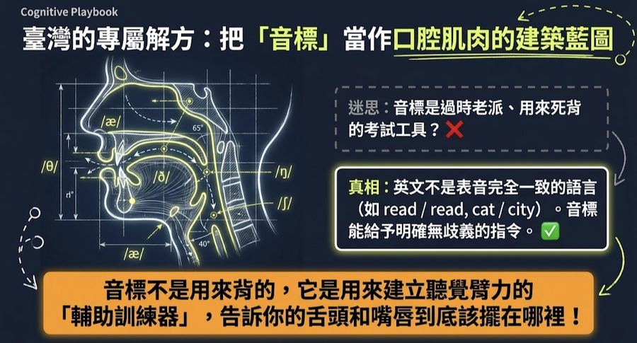
美國的做法是補「拆音」：立法保障學生接受 PA 訓練，並要求小學老師重新學習 SoR。臺灣缺的是另一邊。依序點下面四步：
提示：音標是口腔肌肉的建築藍圖，告訴舌頭與嘴唇該放哪裡；Phonics 是結果，不是第一步。
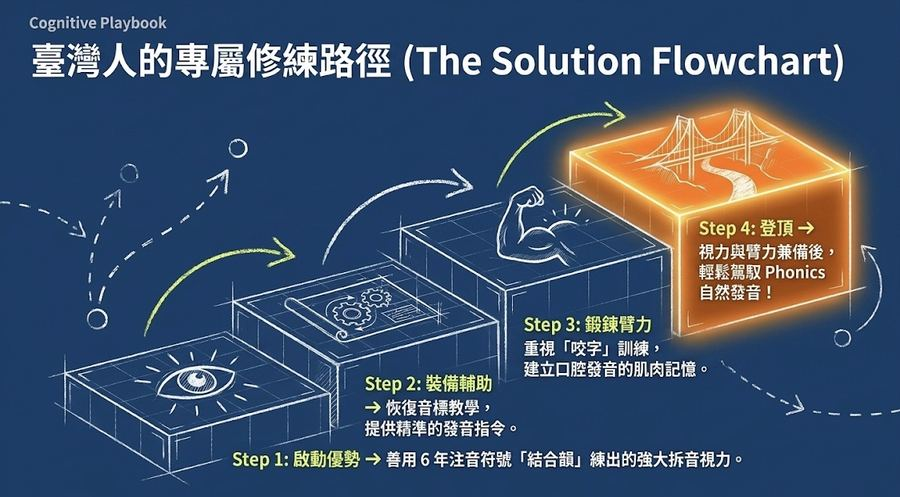
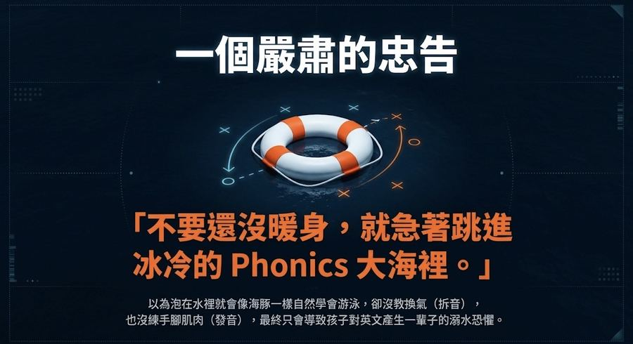
片尾 10 秒影片。
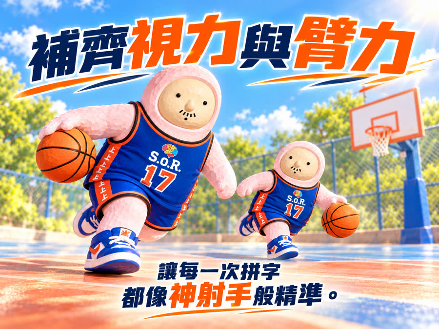